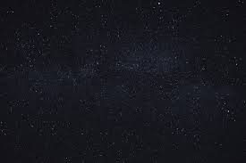
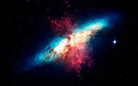
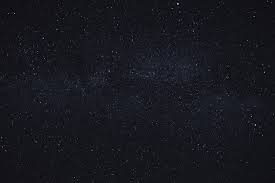
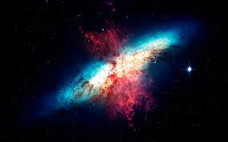

Bem vindo ao AstroVision
Site de divulgação Científica

Site de divulgação Científica
Você ja olhou, profundamente, e se perguntou ? oque um buraco negro realmente é ? Se te perguntarem agora mesmo oque é um buraco negro, você terá uma resposta completa ?
Na maioria dos casos, não.
Este site está aqui para isso ! Contar a você tudo sobre esses grandes e misteriosos corpos celeste.
 


